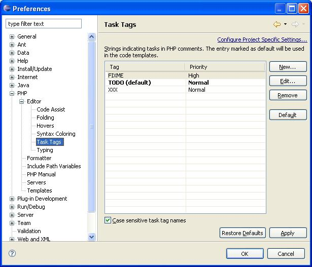
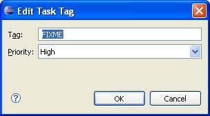

Tasks are reminders by the programmer to him/herself. They have a name and a priority and are associated (by the programmer) with any line in any file (or with the file itself) and are automatically synchronized with the Editor.
Note: Tasks are automatically synchronized with the Editor.
Tasks are used as reminders of actions, work to do or any other action required by the programmer.
Select Windows | Preferences | PHP | Editor | Task Tags. Preferences will open to the Task Tag dialog.

Figure 1 - Task Tag Preferences
The Preferences page contains a list of tags and priorities. The list of Task options is as follows:
Tags may contain any character string; priorities can be: High, Normal or Low.

Figure 1 - Edit Task Tag
.